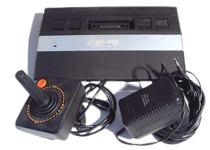

|  |
Random facts about me:
|
Some of the favorite songs:
|
|
Atari 2600 hardware components:
The Atari 2600 has many input devices such as joysticks, paddles, and keyboards, as well as third-party components. The console was originally packaged with two standard Atari CX10 joysticks, later upgraded to the more common CX40 model, and a set of paddles. Joysticks, featuring a single button and four-directional stick, are used by most Atari games and are the predominant input device. There were two different designs for the six switch models, so named for the six prominent aluminium switch levers present on the control panel. Both designs incorporated a switch board and a motherboard which were connected by a 12-pin ribbon cable. Both designs were originally sold in North America with or without an additional switch accessible via a hole in the bottom which can toggle the console's TV output to either channel 2 or channel 3. The original Atari 2600 power supply was a linear AC adapter. Better and more reliable switching adapters became common late in the 2600's heyday. In 1983, the Atari 2600 had bigger issues. Trust me, I remember. The second problem is that people left the original Atari 2600 AC adapter plugged in all the time. Nobody I knew ever unplugged theirs, except for that one time when they moved it from the TV in the living room to the one in the basement, and then when they unplugged it and boxed it up for the last time. So those power supplies spent years of converting standard household 110v AC current to 9v DC whether something needed it or not. Eventually, many of these poor things gave up the ghost. The manual that came with the system did tell you to unplug the AC adapter when you weren't playing, but who ever looked at the manual once they had it set up and working? No one I knew. The Atari 2600 power supply plugs into the back of the unit, near the center. It may be labeled “power adapter” or simply “power.” Regardless of how it may be labeled, it's the only port that looks like the audio jack on a phone or MP3 player. |